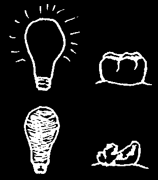
A cavity may look small on the outside, but it is much bigger inside. Decay spreads more easily in the soft part under the hard cover of the tooth.
A tooth with a cavity may hurt, but it usually does not hurt all the time. This is because the bottom of the cavity is close, but not yet on the nerve inside the tooth.
Fill a small cavity and save a tooth.
A small cavity that is not treated grows bigger and gets deeper. When the cavity finally touches the nerve, it causes a tooth abscess. Infection from the tooth decay going inside the tooth causes the tooth to ache all the time, even when you try to sleep.
Infection can pass from the tooth to the bone. As it spreads under the skin, there will be swelling of your face.
A tooth with an abscess must either be taken out or have its nerve treated.
An abscessed tooth is dying. When it dies the tooth changes color from white to dark yellow, grey, or even black. Pus from the end of its root can pass to the gum, making a sore called a gum bubble.
A tooth is like a light bulb.
When the bulb is alive from power inside, it is bright and useful.
The little wires inside the bulb are like the nerves inside the tooth. When the bulb burns out, it is dark and not useful any more.
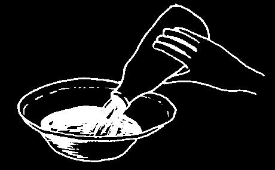


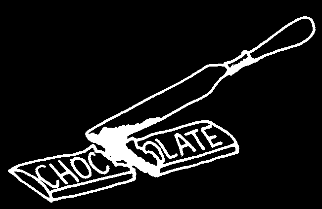
ACTIVITIES:
1. Have each student look inside a partner’s mouth. Look for black spots that may be cavities, for dark teeth that are dead, and for sores on the gums, especially near a bad tooth.
2. Discover how sweet food sticks to teeth.
• Cut several different kinds of food with a knife.
• Vegetables and meat do not stick to the knife.
• Sweet foods, like chocolate and jam buns, do stick to the knife.
They stick to your teeth the same way.
Pour some cola or juice in a dish, and leave it outside overnight.
As water is lost, the juice left in the dish becomes sticky. It attracts flies.
The air you breathe dries the cola and causes a sticky, very sweet coating to form on your teeth. It attracts germs.
Try to find some old teeth. Ask the students to keep their own baby teeth when they fall out. (Note: in some countries this is not acceptable.) Your dental worker can save you some teeth that were taken out at the clinic.
Scrape the outer cover of the root with a knife. Feel how hard and smooth it is.
Then find out what happens when the students leave a tooth in cola, milk, or plain water.
After 3 days scrape each tooth again with a knife. Students will discover that sweet cola drinks make teeth softer and darker in color.


3. Look inside a tooth for the space where the nerve and blood vessel used to be. See how close they were to the tooth’s hard outer cover.
Look for a small hole at the end of the root. That is the place where the nerve and blood vessel enter the tooth.
Ask your dental worker to find an old tooth with a cavity and cut it for you.
OR
• Take a hammer.
• Gently break open a tooth.
• Look inside.
See how much bigger the cavity is on the inside. lt spreads under the hard cover.
Cut through a rotten yam. See how the rotten part spreads under its skin in the same way.
4. Do a project in class.
• Count the number of students with cavities.
• Count the number of teeth having cavities. Show the students how to look for them on the tops, sides and between the teeth.
• Find out the person’s age.
Have the students write on the blackboard what they counted. Then make a chart or graph.
• Decide if tooth decay is a serious problem in your school. Ask your dental worker to look at your results and to come and treat the students, and help you prevent the problem from returning.
• Do the same with brothers and sisters at home. Find out if tooth decay is a problem with these young children. Tell your dental worker what you find.
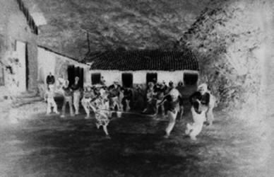
How Do Germs Make Holes in the Teeth?
THE IDEA:
Acid makes holes in the teeth. The acid is made when sweet foods mix with germs in your mouth.
It is not possible to prevent cavities or gum problems by trying to kill all of the germs in your mouth. There are too many—and some germs are good for you. The important thing is to keep the germs from getting together and making a film or coating on your teeth.
This film on the teeth is called plaque, but you do not need to use this word.
Every morning we can all feel a 'furry film’ on our teeth. This film must not be allowed to stay on the teeth! It will mix with sugar and make acid. Worse, if it stays in a group (or 'colony’) for more than 24 hours, it will mix with saliva, harden, and make tartar (see page 52).
The main reason for cleaning teeth is to break up these colonies so they cannot make acid. Also, if you forget to clean your teeth, tartar will form, and you will need a dental worker to scrape it off. This is why it is important to clean your teeth at least every 24 hours, so the tartar can never form on your teeth.
THE ACTIVITY:
Here is a game called “Scatter!” that students can play outside. You need:
• Five 'bases’ (a tree, rock, or the corner of a house can be a base) in a half circle,
12 meters apart. Each base must have a 'monitor’ who stays at the base.
Note: children who cannot run can be good monitors.
• One person with a broom.
This person is the
'decolonizer’.
Children in Jocuixtita, Mexico, beginning a game of “Scatter!” The 'decolonizer’ is the girl in the center with the broom.
The Game:
20 students called 'colonizers’ stand facing the decolonizer. When the decolonizer says “go!” they try to 'form colonies’ around the bases before the decolonizer can touch them with the broom.
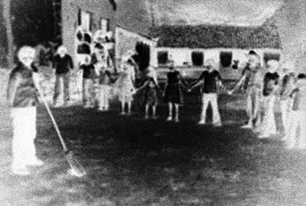
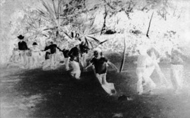

The colonizers win if they make a colony. There are two kinds of colony: (1) 15 people touching one monitor at a base, or (2) a chain of 12 people holding hands, touching two monitors.
Play two games: one with children trying to form the first kind of colony, one with the second kind. These photos are
The 'decolonizer’ (with broom) has lost from the second game.
the game. The children behind him have formed a 'colony’.
The decolonizer tries to stop the others by touching them with the broom. When the decolonizer touches a colonizer with the broom, the colonizer must leave the area for one minute. (Give that child a task to do—run around the school-house or lie down and sit up 30 times.)
The decolonizer wins if no
Here the decolonizer stops a boy from colonies form in 5 minutes.
completing a chain.
After The Game:
Talk to the students about germs in their mouths and how small they are. Can anyone see germs?
No, but they can feel them and taste them. Ask the group what their mouths feel like in the morning when they wake up. You may get these answers:
• My teeth feel mossy.
• My breath is bad.
• I feel a coating on my teeth,
To teach about things too small to see, look but it goes away when I at the suggestion on page 11-29 of Helping brush them.
Health Workers Learn.
Tell the students that this coating on the teeth is a 'colony’ of germs. They are always trying to group together on the teeth or in spaces between the teeth—just as the 'colonizers’ did in the game!


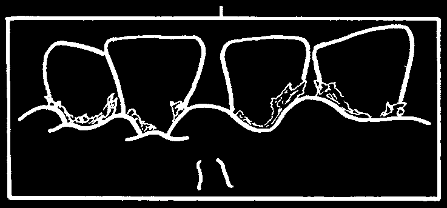
What Makes the Gums Feel Sore?
THE IDEA:
Healthy gums fit tightly around the teeth and help to hold them strongly.
Healthy gums also cover and protect the bone under them.
Healthy gums are pink in color, or even blue or dark yellow in some people.
But healthy gums are never red.
Healthy gums are pointed between the teeth. This lets food slide away and be swallowed.
Healthy gums fold under, making a little pocket around the tooth.
As we saw with the last activity (p. 50), when you have 'colonies’ of germs on your teeth, they can make acid that makes holes on your teeth. The same coating of germs can make a different acid that makes the gums sore. This also happens when food mixes with the coating on your teeth. Soft food is the worst kind, because when it mixes with spit it sticks more and stays longer on your teeth. Juice from tea, betel nut, and meat color this food, making the tooth look dark.
Healthy gums become sore because of acid. When the coating on the teeth (p. 50) becomes hard, it is called tartar. Tartar can hurt the gums.
Also, the 'colonies’ of germs can make a coating on top of tartar more easily than on a clean tooth. When the colonies are new, they make more acid which causes tooth and gum problems. After 24 hours, it hardens and makes a new layer of tartar. The tartar gets bigger and bigger.
Here is a larger picture of the
Sore gums are infected.
teeth in the box above:
Infected gums are red and bleed easily.
Infected gums are round and swollen between the teeth.
They are also loose instead of tight against the teeth.
Infected gums have a deep gum pocket which catches even more food.
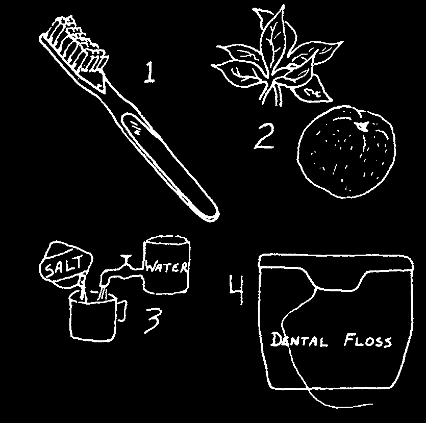

Infection in the gums is called gum disease. It is important to treat gum disease early, before it can spread to the root fibers and the bone.
If you have sore, bleeding gums, you can do much to treat the infection yourself.
1. Clean your teeth with a soft brush gently and more often
(see page 71).
2. Eat more fresh fruits and vegetables.
3. Rinse your mouth with warm salt water.
4. Clean between your teeth with dental floss or string. At first your gums may bleed when you do this. But when the gums are stronger the bleeding will stop.
ACTIVITIES:
1. Have the students look in each other’s mouths.
Can they see the coating on the teeth? Usually they cannot. They may see food or 'white stuff’, but this is not the coating that makes acid.
However, if someone has been chewing betel nut or eating berries, you will see stains on her teeth and the stains will be darkest where she has these colonies of germs on her teeth.
2. Put something on the teeth to stain the colonies of germs. Try using food dye, betel nut or berry juices. remember: first wash your hands!
Older students can rub berries on the teeth of the younger ones. Have them rinse with a little water and spit it out. After this, the colored areas on the teeth will show where the colonies of germs are forming. Where are they? Usually you will see the dark colors:
• between the teeth
• in the pits or holes in the teeth
• on the tops (biting surfaces) of the teeth.
The older students can show the younger ones the best way to clean teeth (see pages 69–72). Have them use a mirror to see if they are getting the colored juice from their teeth. They will learn that it is most difficult to get rid of the color between their teeth. Give them some string, dental floss, or the soft stem from a young palm leaf and show them how to use it between their teeth (p. 72). Remind them to be gentle, or they will hurt their gums. Clean between your teeth every day.


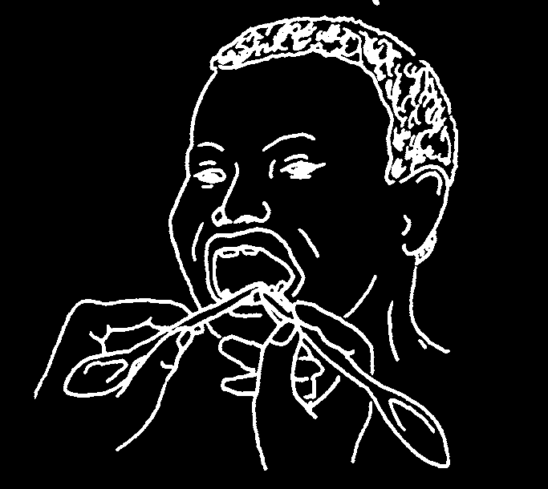
What Does It Mean if a Tooth is Loose?
THE IDEA:
Baby teeth become loose when children are between 6 and 12 years old.
This is normal. If a loose baby tooth does not have a cavity, and if the gums around it are healthy, there is probably a permanent tooth growing under it.
But a tooth might be loose because it is broken or because it is sick from an abscess or gum disease. Either can destroy the bone around the tooth’s roots.
When bone is lost, the tooth becomes loose. A loose tooth hurts and usually must be taken out.
There is no medicine to make bone grow back around the roots of loose teeth. All you can do is stop the infection from getting worse.
ACTIVITIES:
1. Let the students look into each other’s mouth for loose baby teeth.
Look carefully to see why a tooth is loose.
Touch the gum and bone beside the loose tooth. You can feel a bump—it is the new permanent tooth growing.
Save the baby tooth after it has fallen out. Look to see how the permanent tooth has eaten away its root by pushing against it.
2. Look for teeth that have cavities or gum disease around them. The students can do this with each other, and then later at home.
(remember they must wash their hands!)
A tooth that has some of its root showing is probably loose.
Using your fingers or the handles of two spoons, rock the tooth back and forth gently. See how much it moves, and ask how much it hurts.
Tell the person what he can do to prevent other teeth from becoming loose. (See the next section.)
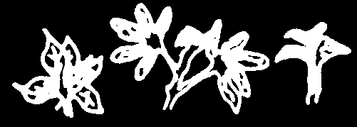

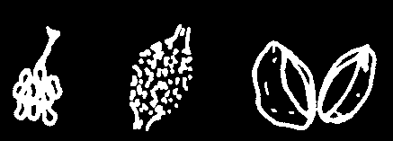
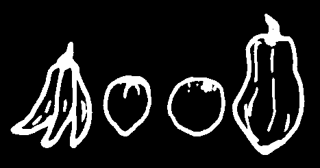

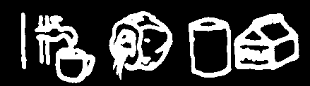
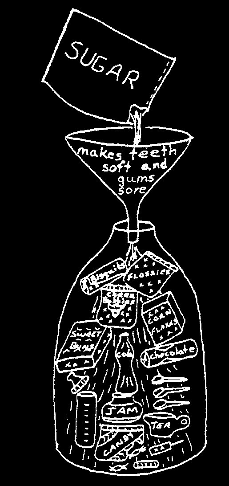
How Can We Prevent Cavities and Sore Gums?
Eating good food and carefully cleaning the teeth prevents both tooth decay and gum disease.
Food from your own garden and local food from the market is best.
These foods are good for your body, your teeth, and your gums.
Vegetables, especially
Peas and beans, like green
Oil, from palm nut those with dark green beans, soybeans, winged kernels, ground nuts, leaves.
beans, and mung beans.
and coconut.
Fruits, like banana,
Fish, meat and eggs.
Clean water, coconut guava, oranges, water, and milk are best and papaya.
to drink.
Soft foods and sweet foods from the store are not good for you. Soft foods stick to your teeth easily. They can work longer to cause cavities and infected gums. Sweet foods have mostly sugar in them, and it is 'factory sugar’, not the 'natural sugar’ that is in the foods in the pictures above.
This kind of sugar is quick to mix with germs and make acid. remember: natural sugar makes acid slowly; factory sugar makes acid quickly.
Children who eat a lot of sugar lose their appetite for other foods—the foods that help them grow strong, stay healthy, and learn well in school.
Store foods are also expensive. You can usually get better food, and more of it for the same money, from your garden or in the market.


Cleaning your teeth carefully every day is another important way to take care of both teeth and gums. However, cleaning teeth is like building a house.
To do a good job, you need to work slowly and carefully. Once a day is enough, if you clean your teeth well every day.
Buy a brush from the store, or make one yourself (see p. 4). But be sure the cleaning end of the brush is soft so that it won’t hurt the gums.
Use your brush to clean all the teeth, especially the back ones with the grooves. Back teeth are harder to reach and so it is easy not to clean them well enough. Cavities start from sweet food and germs left together inside the grooves.
1. Scrub the inside, outside, and top of each tooth.
2. Push the hairs of your brush between two teeth. Sweep the food away.
3. Wash your mouth with water, to remove any loose bits of food.
Small children are not able to clean their teeth carefully enough by themselves. They need help. Look at the pictures on the cover and p.18 to see how you can do this. Older children can care for younger brothers and sisters at home.
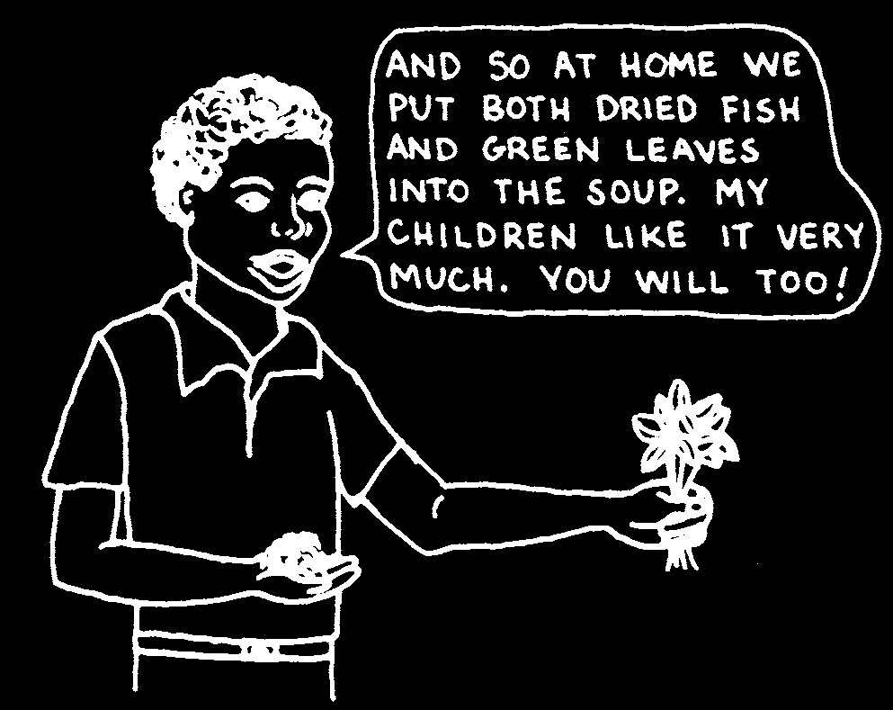
ACTIVITIES:
One of the best ways to teach is by example.
Students will believe what their teacher says if they know he eats good food and cleans his teeth.
The reverse is also true. Learning is harder when students know that their teacher does not do those things himself.
Students can be a good example for their community, too. They can:
• draw pictures of foods that are both good and bad for teeth. Use them to make posters and flannel-board stories.
• make puppets and plays to discuss ways people can become healthier.
There are some other ways to make learning meaningful and fun.
1. Make a garden at school. Divide the ground so that each class has its own space to plant a garden.
Use some of the garden’s food to prepare a meal for the students, perhaps once a week. Students can bring food from home if there is not enough ready in the garden.
2. Organize a school lunch program. Each day the students can bring some good food from home. Cooked yams, or maize, nuts, fruit and fresh vegetables are all good. Often the students will exchange food and talk about the many different foods that can be grown locally.


3. Find the best way to clean teeth. Divide the class into groups. They will learn more easily in a small group of 4 to 8 students.
Give all the students something to eat that is sweet, sticky and dark in color, such as sweet chocolate biscuits. Ask the students to look in each other’s mouth, to see how easily the biscuit sticks to the teeth. One or two of the students in a group can then try to clean away the pieces of biscuit, using a different method.
each person eat a sweet sticky food and…
...do
...brush nothing and rinse
...rinse
...eat a only fibrous food
When they are finished, the students can look at the teeth to decide if they are clean or not. Put your findings on a chart and talk about what you have learned.

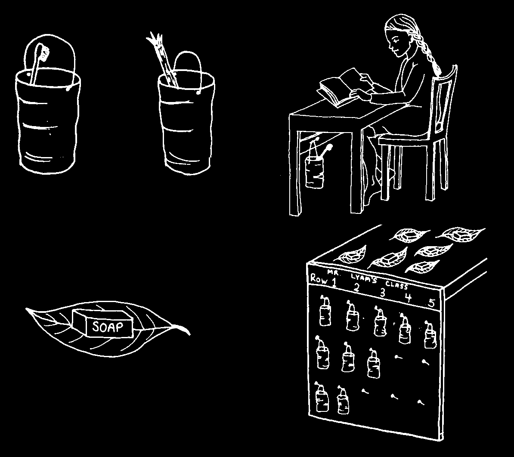
4. Make cleaning part of a daily health activity. Older students can look after younger students. They can first check their hair for lice, then sores for infection, and teeth for old food or germs. (To see the coating of germs on the teeth, try the activity on page 53.) One partner can point out to the other where washing and brushing can be done better.
CLEANLINESS CAN BEGIN AT SCHOOL
At school, students can wash their hands before lunch and brush their teeth afterward. Encourage them to keep a piece of soap and a toothbrush or brushstick (p. 4). One day a week, the whole class can treat their teeth with fluoride (p. 205) to prevent cavities.
The student can keep the
OR brush at her own desk...
A piece of bamboo can hold a brush nicely. Make two holes near the top for some grass string, to hang the bamboo brush holder.
... or on a rack at the back of the room.
Let each student look after her own soap and brush.

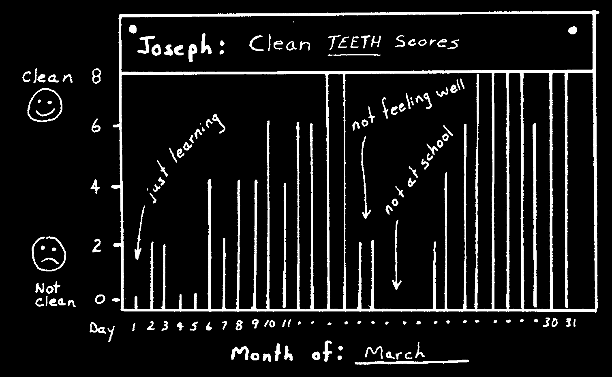
Have the students score each other’s progress. Do not make it hard to judge, or they will not do it. In the example below, the tooth is either clean or net clean.
SCORING TEETH
Pick 4 teeth, a back tooth and a front tooth—two on top and two on the bottom.
Use the same 4 teeth for each person. Look for food on each tooth near the gums.
A clean tooth = 2 points.
A dirty tooth = 0 points.
Total possible points each day is 4 teeth x 2 = 8 points.
In this example the score is:
Tooth 1 = 2 points
Tooth 2 = 0 points
Tooth 3 = 0 points
Tooth 4 = 2 points
Total = 4 points
Have each student put his daily score on a chart. At the end of the month he can see how much he has improved.
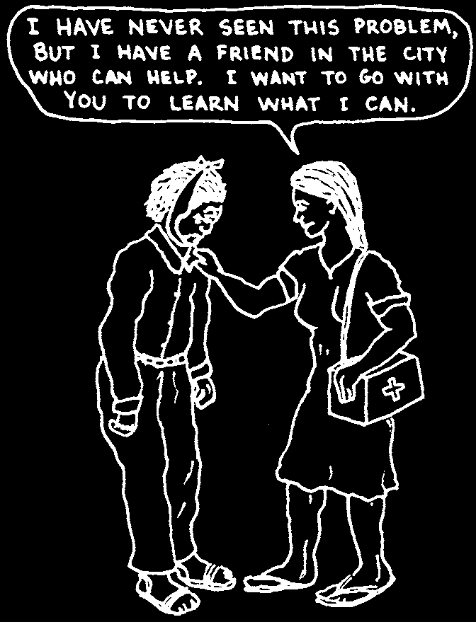